Taukah kalian perbandingan antara umur kucing dan manusia?
Bagi para pencinta kucingtentunya perbandingan umur antara kucing
dan manusia ini adalah hal yang biasa didengar bukan?
Kucing yang baru lahir sampai dengan umur 6 bulan dimasukkan ke
dalam kelompok Kitten, selanjutnya kelompok Junior: 7 bulan - 2
tahun,Prime: 3 tahun- 6 tahun, Mature: 7 tahun- 10 tahun, Senior: 11
tahun - 14 tahun, Geriatric: lebih dari 15 tahun.
Kucing yang dipelihara dengan baik umurnya dapat mencapai lebih dari
10 tahun.Memang kelihatannya relatif pendek, akan tetapi tahukan
andajika dibandingkan secara biologis umur kucing tersebut cukup tua
jika disetarakan dengan umur manusia.
Berikut adalah tabel kesetaraan umur kucing dengan manusia:

Jadi kalau seandainya sekarang kita memiliki seekor kucing yang
berumur10 tahun, maka usia kucing kita setara dengan orang yang
berumur 56 tahun, dengan skala perbandingan umur tersebut kita dapat
menentukan kesetaraan umurnya dengan manusia.
Apa saja sih jenis-jenis kucing yang biasa kita lihat
kalau mau tau lebih lanjut simak pembahasan berikut ya..
1. Kucing Ragdoll
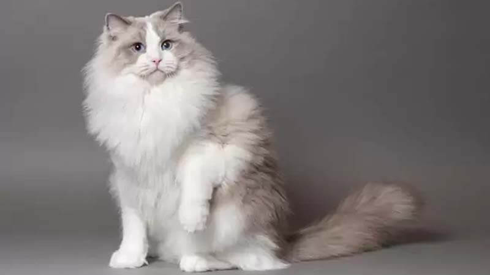
Ragdoll adalah jenis kucing peliharaan populer karena sangat
menyukai manusia. Saking sukanya, kucing tersebut sering mengikuti
pemiliknya di sekitar rumah dari pagi hingga malam. Jika kamu
mencari sahabat dengan bulu semi-panjang dan berat sekitar 6 kg yang
selalu menempel dan mengikutimu, jenis kucing Ragdoll bisa menjadi
belahan jiwa kucing kamu. Penyanyi Taylor Swift juga memelihara
kucing jenis Ragdoll ini.
2. Kucing Maine Coons

Jenis kucing maine coon terkenal karena ukurannya yang besar hingga
memiliki berat 13 kg. Tetapi alasan lain mereka menjadi ras kucing
rumahan yang populer adalah karena kepribadian yang ramah. Jenis
kucing ini sangat suka bermain dan bergabung dengan kamu apa pun
yang dilakukan.
3. Kucing Siamese
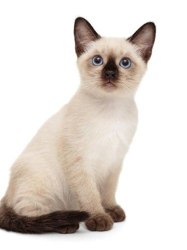
Kucing Siamese berkembang biak dengan sangat cantik. Jenis kucing
ini memiliki mata cerah dan bulu coklat yang khas di ekor dan
anggota tubuhnya. Kucing jenis Siam ini juga cenderung memiliki
kepribadian yang sangat santai. Mereka lebih suka duduk di pangkuan
pemiliknya daripada membuat masalah.
4. Kucing American Shorthairs

Kucing jenis American Shorthairs ini memiliki masa hidup yang lama.
Jadi kucing jenis ini bisa menjadi pilihan tepat jika kamu mau
memelihara kucing untuk tumbuh bersama. American Shorthairs juga
dikenal sangat manis dengan anak-anak dan hewan lainnya seperti
anjing. Jenis kucing ini termasuk mudah dirawat, artinya cocok untuk
kamu yang pemula dalam urusan memeliharakamu tidak perlu
sering-sering menyikatnya.
5. Kucing Sphynxes
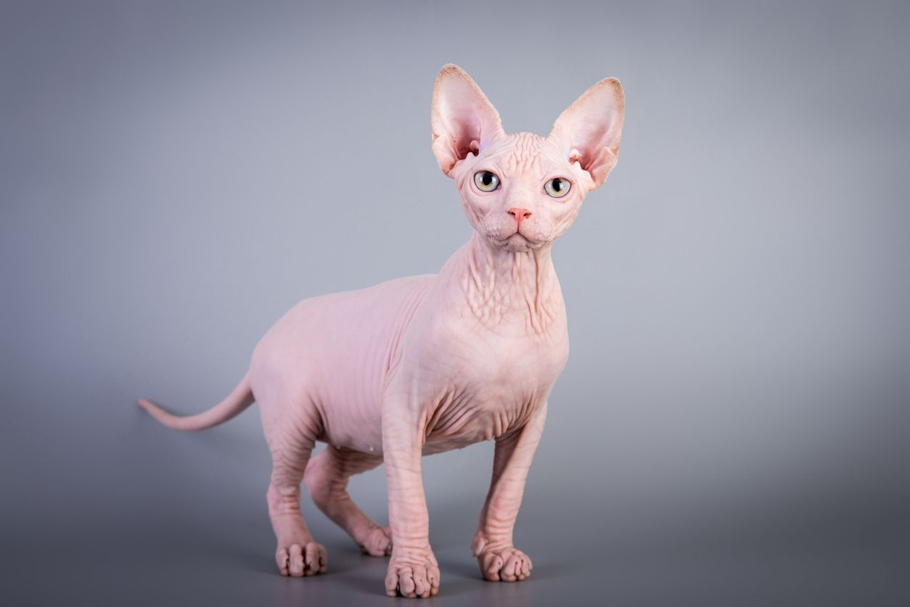
Kucing Sphynx termasuk jenis kucing tidak berbulu. Karena tak
berbulu ini, sekilas kucing sphynx terlihat jahat, meski nyatanya
tidak demikian. Buat kamu yang alergi bulu kucing, jenis kucing ini
bisa menjadi solusi. Sphyn termasuk kucing yang menyukai perhatian
dari orang-orang dan cenderung sedikit nakal ketika mau mencuri
perhatian. Tapi selama kamu bersedia untuk sering menggaruk telinga
Sphynx, dia akan baik-baik saja. Salah satu orang Indonesia terkenal
yang memelihara jenis kucing ini adalah Raditya Dika.
6. Kucing Scottish Fold

Kamu mungkin sudah akrab dengan ras kucing ini yang dikenal sebagai
lipatan Skotlandia. Nama kucing scottish fold didapat dari telinga
mereka yang terlipat. Scottish fold adalah jenis kucing berukuran
sedang dengan berat 4 hingga 6 kg. Mereka seperti terobsesi dengan
pemiliknya. Mereka hidup untuk kasih sayang manusia, dan tidak takut
dengan suara keras. Artinya jenis kucing ini cocok buat kamu yang
tinggal di kota besar.
7. Kucing Somali
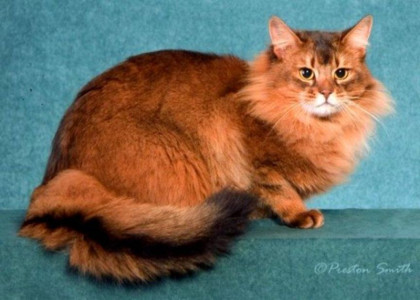
Kucing Somali memiliki bulu ombre khas yang hadir dalam empat warna
menawan. Somalia berkembang pesat ketika mereka memiliki pemelihara
yang dapat diandalkan dan memberikan banyak perhatian pada mereka.
Jenis kucing peliharaan ini suka bermain dan sangat pintar.
8. Kucing Persians
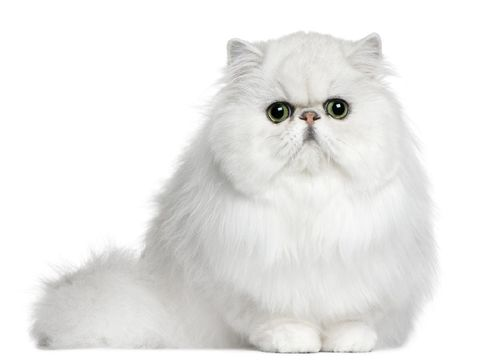
Kucing Persia sangat lucu dan terlihat seperti boneka. Ras kucing
ini paling populer, karena mereka cantik dan juga memiliki
kepribadiannya yang manis. Terkadang jenis kucing Persia membutuhkan
sedikit waktu untuk beradaptasi dengan lingkungan baru, tetapi
setelah sedikit tenang, mereka akan merasa sangat nyaman di rumah
kamu. Memiliki bulu yang tebal, kamu memang harus sering menyikat
kucing Persia kamu.
9. Kucing Abyssinians
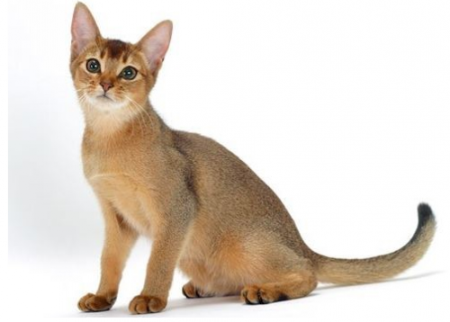
Jenis kucing ini sangat cantik dan populer karena mereka jenius.
Abyssinia juga termasuk salah satu ras kucing tertua di dunia. Satu
yang harus kamu ketahui jenis kucing Abyssinia bukanlah jenis yang
paling suka diemong. Mereka memang menyukai persahabatan manusia,
tetapi mereka menunjukkannya hanya dengan berada di dekat kamu.
10.Kucing Birmans
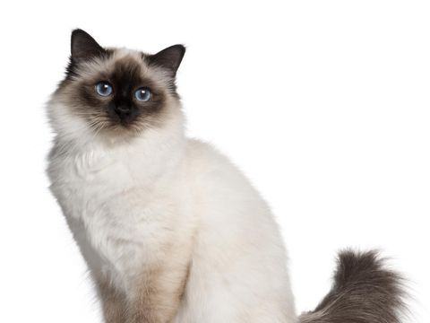
Jenis kucing Birman mudah dikenali dari mata birunya yang khas serta
hidung cokelatnya yang manis. Birman memiliki berbagai warna, tetapi
mereka semua terlahir putih. Kucing ini memiliki warna bulu yang
berbeda saat tumbuh dewasa. Birman sangat manis dan pendiam, dan
mereka bisa bergaul dengan hampir semua orang.
kira-kira makanan apa saja yah yang gak boleh di makan oleh kucing
yuk simak!
1. Alkohol dan makanan yang mengandung alkohol
Alkohol sangat berbahaya bagi kucing dan anjing. Meskipun orang
mungkin berpikir bahwa menawarkan bir kepada hewan peliharaannya
sebuah hal yang lucu, hal ini menyimpang dan membahayakan nyawa
hewan peliharaanmu. Jika kucingmu kebetulan mengonsumsi alkohol,
kamu mungkin memerhatikan bahwa mereka memiliki masalah pencernaan,
kesulitan bernapas, dan linglung. Hubungi dokter hewan segera,
karena keracunan alkohol dapat menyebabkan koma atau kematian.
Selain itu, waspadalah terhadap makanan yang mengandung alkohol atau
turunan alkohol.
2. Alpukat
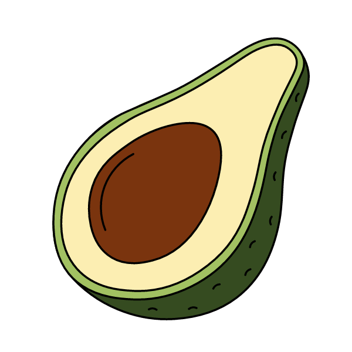
Kucing adalah karnivora wajib dan memiliki proses pencernaan yang
sama sekali berbeda dari manusia. Kulit buah alpukat mengandung
persin yang umumnya beracun bagi kucing dan anjing. Jika kucingmu
tidak sengaja menelan alpukat, ia mungkin mengalami muntah dan diare
atau mengembangkan pankreatitis akut karena kandungan lemaknya.
Banyak spesies lain tidak bisa makan alpukat karena dianggap sangat
berbahaya, khususnya burung, kuda, dan kambing.
3. Cokelat
Cokelat beracun bagi kucing dan dapat menyebabkan beberapa masalah
serius. Kucing tidak selalu tertarik dengan cokelat, tetapi apapun
yang mengandung cokelat atau serpihan cokelat dapat membahayakan
mereka. Hewan peliharaan yang mengonsumsi cokelat sering mengalami
diare dan muntah, masalah jantung dan tekanan darah, dan terkadang
dispnea. Toksisitas cokelat selalu bergantung pada dosis cokelat
susu cenderung kurang manjur, karena mengandung lebih banyak lemak
susu (lemak biasanya berkontribusi pada pankreatitis akut), tetapi
semakin gelap cokelatnya, semakin tinggi risikonya. Lihat Foto
Ilustrasi bawang putih.(SHUTTERSTOCK)
4. Bawang putih
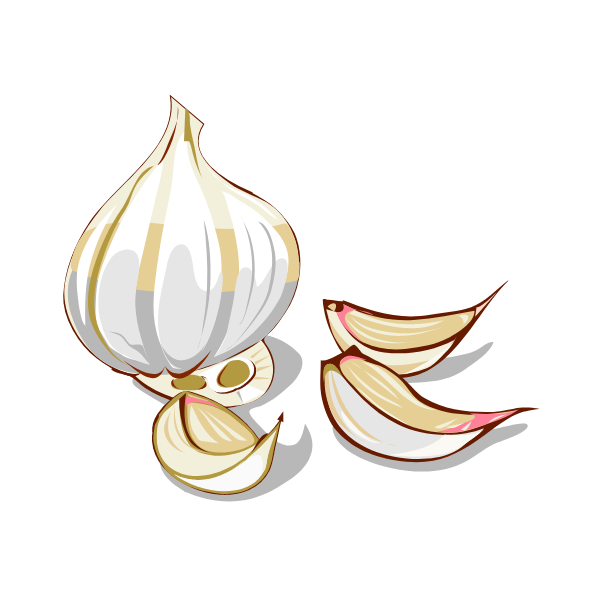
Perlu diketahui bahwa bawang putih berbahaya bagi kucing sehingga
tidak boleh diberikan sama sekali. Bawang putih mengandung tiosulfat
yang dapat menghancurkan sel darah merah dan memicu anemia
hemolitik. kebanyakan kasus, kucing bahkan tidak akan menyukai
bawang putih, tetapi kucing yang penasaran mungkin akan
mencicipinya.
5. Telur, daging atau ikan mentah
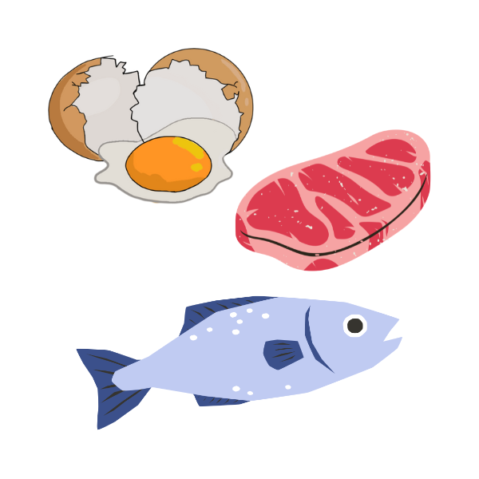
Jika kucingmu suka berburu, kamu mungkin menganggap aman untuk
memberi mereka makan telur, daging, atau ikan mentah. Lagipula, apa
yang lebih alami daripada mentah? Makanan mentah ini mungkin
mengandung bakteri E. coli dan salmonella yang berbahaya, yang dapat
menyebabkan diare, muntah, dan kelesuan pada kucing. Memaparkan
kucingmu pada patogen ini bahkan bisa berakibat fatal. Putih telur
mentah juga mengandung protein yang disebut avidin. Jika dikonsumsi,
avidin dapat mencegah kucing mengonsumsi vitamin B biotin dengan
benar, yang berpotensi menyebabkan kondisi kulit dan bulunya kusam.
6. Roti dan ragi

Kucing terkadang dapat makan roti dengan aman, tetapi perhatikan
bahwa roti tidak mengandung nilai gizi bagi mereka (hampir tidak
mengandung lemak atau protein), jadi sebaiknya tidak menggantikan
pola makan makanan normal mereka. Ragi dan adonan roti mentah tidak
aman untuk kucing, setelah dimakan, adonan bisa mengembang di perut
kucing dan menyebabkan masalah pencernaan yang berbahaya.
7. Ikan tuna
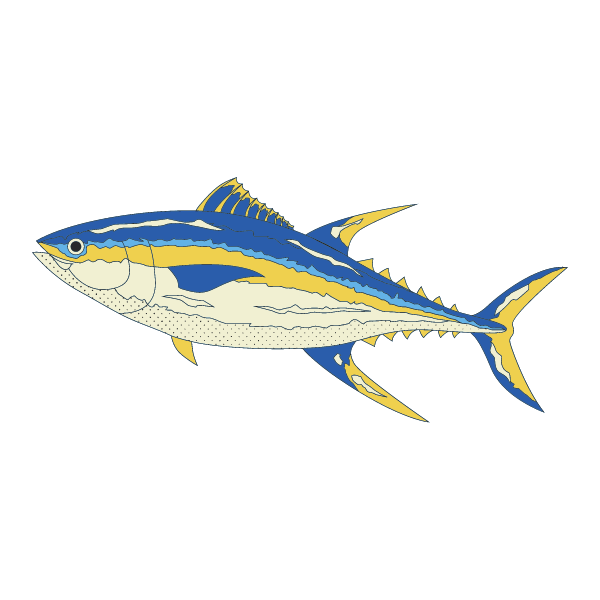
Mungkin kamu kaget dan tidak yakin dengan pernyataan ini, karena
hampir semua kucing pasti menyukai ikan tuna. Ikan tuna dapat
sesekali menjadi suguhan untuk kucingmu, tetapi kamu harus
menghindari memberi mereka makanan yang banyak mengandung ikan tuna.
Ikan tuna kekurangan beberapa nutrisi yang dibutuhkan kucing untuk
tetap sehat, dan terlalu banyak tuna dapat menyebabkan keracunan
merkuri. Dan, saat sesekali memberi makan ikan tuna kepada kucingmu,
kamu tidak boleh memberikannya dalam kondisi yang masih mentah.
8. Anggur dan kismis
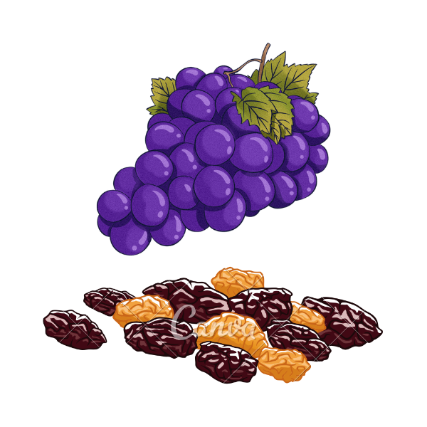
Anggur dan kismis dalam jumlah kecil dapat menyebabkan kucingmu
sakit, bahkan dapat menyebabkan perkembangan gagal ginjal yang
cepat. Dalam 12 jam setelah menelan, terkadang muntah terjadi.
Tanda-tanda lain yang bisa muncul dalam 24 jam termasuk lesu, diare,
nafsu makan berkurang, buang air kecil berkurang dan sakit perut.
Masih tidak jelas mengapa anggur dan kismis bisa menyebabkan gagal
ginjal pada kucing, dan bahkan dalam jumlah kecil bisa membuat
kucing sakit. Muntah dan hiperaktif yang berulang merupakan tanda
awal. Meskipun beberapa kucing tidak menunjukkan efek sakit,
sebaiknya jangan berikan anggur apapun kepada kucingmu dan jauhkan
anggur dan kismis dari meja dapur dan tempat lain yang dapat
dijangkau kucingmu.
9. Hati
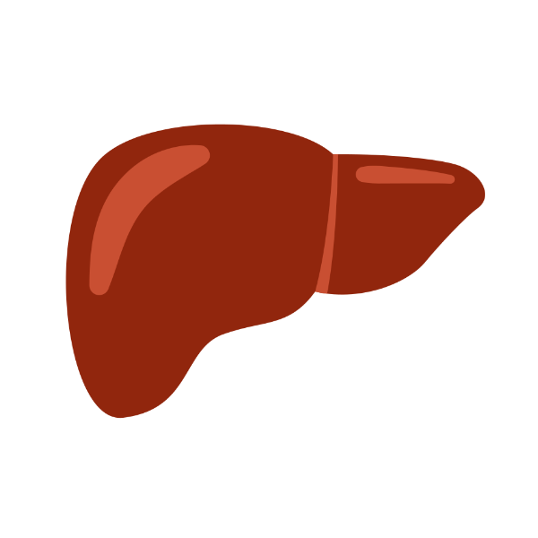
Sedikit hati atau ati tidak ada masalah bagi kebanyakan kucing.
Faktanya, hati bisa menjadi sumber protein, zat besi, dan beberapa
nutrisi lainnya, tapi batasi pemberian hati pada kucingmu. Hati
sangat tinggi vitamin A, dan vitamin A larut dalam lemak (terbentuk
di sel-sel lemak di dalam tubuh). Jadi, kucing yang makan terlalu
banyak hati terlalu lama dapat menyebabkan ketidakseimbangan vitamin
A yang berbahaya, suatu kondisi yang disebut hipervitaminosis A.
10. Tulang

Tulang kecil dan rapuh, seperti pada ayam, kalkun, dan burung
lainnya - dapat pecah dan menyebabkan kerusakan serius pada mulut
dan saluran pencernaan kucing.